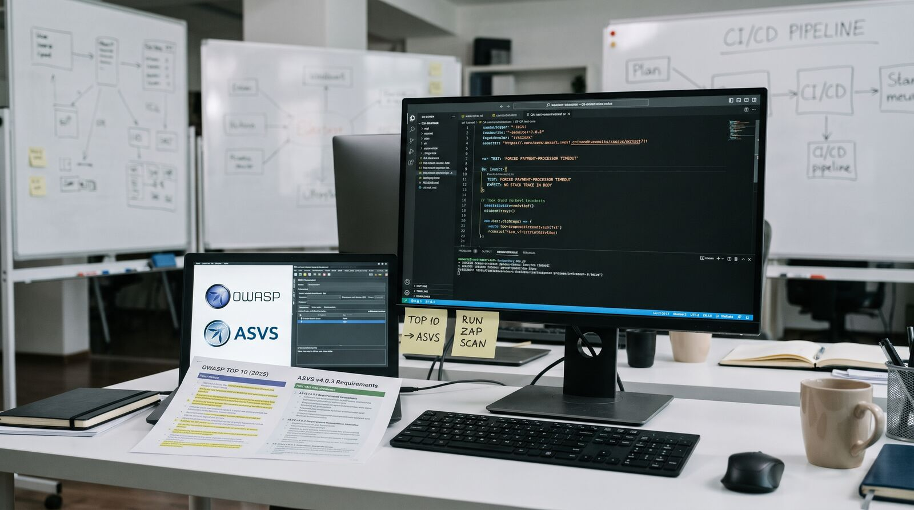

OWASP for QA: Turning the Top 10 and ASVS Into Actual Test Cases
"Test for OWASP" is a vague instruction. Here's how the Top 10, ASVS and ZAP fit together into test cases a QA engineer can actually run.
"Make sure we're covered for the OWASP Top 10" is a common line in a security review or a client requirement, and it's not very actionable on its own. The Top 10 is a ranked list of risk categories, not a set of test cases. Turning it into something a QA engineer without a security background can actually execute requires pulling in the rest of the OWASP ecosystem: the Application Security Verification Standard (ASVS) for concrete, leveled requirements, the Testing Guide and Cheat Sheets for how to check each one, and a scanner like ZAP for the parts that are worth automating. Used separately, each piece is either too abstract or too narrow. Used together, they form a workable process.

Three pieces that do different jobs
The Top 10 tells you what to prioritize. The current list (2025) keeps Broken Access Control at the top and moves Security Misconfiguration into second place. It also introduces two categories that weren't framed this way before: Software Supply Chain Failures, which widens an older "vulnerable components" category into a broader look at third-party and build-pipeline risk, and Mishandling of Exceptional Conditions, which covers security gaps caused by bad error handling, such as verbose stack traces or unsafe fallback logic. The Top 10 is useful for deciding where to spend limited testing time, not for writing a single test case.
ASVS turns risk categories into requirements you can check off. It's organized into 14 chapters (V1 through V14, covering things like authentication, session management, access control, cryptography, error handling and logging, and API security) at three verification levels. Level 1 is a baseline that's fully testable through normal penetration testing. Level 2, the one OWASP recommends for most applications handling anything sensitive, adds requirements that typically need some code or design review alongside testing. Level 3 is for applications where a failure has serious consequences, such as payment processing or health data. Version 4.0.3 has 286 individual requirements in total, and OWASP's own guidance is explicit: don't try to implement or verify all of them for every application. Pick a level based on what the application actually handles, then work through the chapters that matter for it.
The Testing Guide, Cheat Sheets, and ZAP are where "verify this requirement" becomes an actual test. The Cheat Sheets give you the technical detail for a specific control (what a safe session cookie configuration looks like, what password storage should and shouldn't do). ZAP is a scanner that can run a subset of checks automatically, which matters because manual verification of 286 requirements per release isn't realistic for most teams.
A worked example: one ASVS requirement, one test case
Take the new Top 10 category, Mishandling of Exceptional Conditions, and ASVS's error handling and logging chapter (V7 in version 4.0.3), which requires that error responses not leak internal implementation details. A concrete test case for a billing API might look like this:
Test: Forced payment-processor timeout does not leak internals
Setup: point the payment gateway client at an unreachable endpoint
(or use a test double configured to time out)
Action: POST /api/v1/charges with a valid request body
Expect:
- HTTP response body contains no stack trace, file path,
SQL fragment, or internal hostname/IP
- HTTP response body contains a generic error code
(e.g. "PAYMENT_PROCESSOR_UNAVAILABLE"), not the raw exception message
- The full exception IS present in the server-side log,
with enough context to debug it internallyThis is a single, specific, repeatable check, and it's the kind of test a QA engineer can write without deep security expertise, once the relevant ASVS requirement has pointed at what to check. The same pattern, pick one Top 10 category, find the matching ASVS chapter, write one or two tests against specific requirements, scales to access control, authentication, or input validation without needing to treat "security testing" as one undifferentiated task.
Where automation fits
A ZAP baseline scan, run against a staging environment as part of CI, is a reasonable first pass for the things that don't need business-logic understanding: missing security headers, outdated libraries with known CVEs, cookies without the right flags, and similar configuration-level issues. The zaproxy/action-baseline GitHub Action or the current ghcr.io/zaproxy/zaproxy container are the maintained way to run this (the old owasp/zap2docker-stable image is no longer the recommended path). What it won't catch is anything that depends on knowing what the data is supposed to mean: a user able to view another tenant's invoice by changing an ID in the URL looks like a completely normal, well-formed request to a scanner. Broken access control, the single most common Top 10 category, is mostly caught by test cases written with knowledge of the application's data model, not by automated scanning.
Pitfalls and limits
Passing a Top 10 checklist is not the same as being secure; it's a prioritized list of common risk categories, not an exhaustive one, and plenty of real incidents fall outside it. Treating ASVS as a box-ticking exercise across all 286 requirements wastes time that could go toward the handful of requirements that actually apply to your application's risk level. A green ZAP scan says nothing about business-logic flaws like broken access control or price manipulation through hidden form fields, so a team that treats "the scanner is clean" as the definition of secure will miss exactly the issues that cause the worst incidents. And Software Supply Chain Failures, the newest category, isn't something a periodic test pass satisfies at all; it needs continuous dependency and build-pipeline monitoring, which is a different kind of control than a test case.
What to do next
- Pick an ASVS level for each application based on what it actually handles (public marketing site vs. an app storing payment or health data), and read only the chapters relevant to that level, not the whole document.
- Take one Top 10 category this sprint and translate one or two of its matching ASVS requirements into actual, repeatable test cases, rather than trying to cover the whole list at once.
- Add a ZAP baseline scan to CI as a first pass for configuration-level issues, and route its findings into your normal backlog instead of treating a clean scan as a security sign-off.
- Revisit which Top 10 categories apply to your systems when a new version ships; the 2025 list added supply-chain and exception-handling risk that many existing test plans don't cover yet.
Sources
„Pobrinite se da smo pokriveni za OWASP Top 10" česta je rečenica u bezbjednosnom pregledu ili zahtjevu klijenta, ali sama po sebi ne govori mnogo o tome šta treba uraditi. Top 10 je rangirana lista kategorija rizika, a ne skup test slučajeva. Da bi se pretvorio u nešto što QA inženjer bez bezbjednosnog iskustva zaista može da izvrši, potrebno je uključiti ostatak OWASP ekosistema: Application Security Verification Standard (ASVS) za konkretne zahtjeve podijeljene po nivoima, Testing Guide i Cheat Sheets za to kako se svaki od njih provjerava, i skener poput ZAP-a za dijelove koje se isplati automatizovati. Svaki od ovih dijelova je, sam za sebe, ili previše apstraktan ili preuzak. Zajedno čine proces koji funkcioniše.
Tri dijela koja rade različite poslove
Top 10 vam govori šta da prioritizujete. Aktuelna lista (2025) zadržava Broken Access Control na vrhu, a Security Misconfiguration pomjera na drugo mjesto. Uvodi i dvije kategorije koje ranije nisu bile ovako formulisane: Software Supply Chain Failures, koja stariju kategoriju „ranjivih komponenti" proširuje na širi pogled na rizik od trećih strana i build pipelinea, i Mishandling of Exceptional Conditions, koja pokriva bezbjednosne propuste nastale zbog lošeg rukovanja greškama, kao što su opširni stack traceovi ili nebezbjedna fallback logika. Top 10 je koristan za odluku gdje potrošiti ograničeno vrijeme za testiranje, ali ne i za pisanje ijednog konkretnog test slučaja.
ASVS pretvara kategorije rizika u zahtjeve koje možete da štiklirate. Organizovan je u 14 poglavlja (V1 do V14, koja pokrivaju autentifikaciju, upravljanje sesijama, kontrolu pristupa, kriptografiju, rukovanje greškama i logovanje, bezbjednost API-ja i slično) na tri nivoa verifikacije. Nivo 1 je osnovni nivo koji se u potpunosti može provjeriti običnim penetracionim testiranjem. Nivo 2, koji OWASP preporučuje za većinu aplikacija koje rade sa bilo čim osjetljivim, dodaje zahtjeve za koje je obično potreban i pregled koda ili dizajna pored testiranja. Nivo 3 je za aplikacije kod kojih otkaz ima ozbiljne posljedice, kao što su obrada plaćanja ili zdravstveni podaci. Verzija 4.0.3 ima ukupno 286 pojedinačnih zahtjeva, a OWASP-ove smjernice su eksplicitne: ne pokušavajte da implementirate ili provjerite sve njih za svaku aplikaciju. Izaberite nivo na osnovu onoga s čim aplikacija zaista radi, pa prođite kroz poglavlja koja su za nju bitna.
Testing Guide, Cheat Sheets i ZAP su mjesto gdje „provjeri ovaj zahtjev" postaje stvarni test. Cheat Sheets daju tehničke detalje za konkretnu kontrolu (kako izgleda bezbjedna konfiguracija session kolačića, šta čuvanje lozinki treba, a šta ne smije da radi). ZAP je skener koji može automatski da izvrši dio provjera, što je bitno jer ručna verifikacija 286 zahtjeva po izdanju za većinu timova nije realna.
Primjer iz prakse: jedan ASVS zahtjev, jedan test slučaj
Uzmite novu Top 10 kategoriju, Mishandling of Exceptional Conditions, i ASVS poglavlje o rukovanju greškama i logovanju (V7 u verziji 4.0.3), koje zahtijeva da odgovori na greške ne otkrivaju interne detalje implementacije. Konkretan test slučaj za billing API mogao bi da izgleda ovako:
Test: Forced payment-processor timeout does not leak internals
Setup: point the payment gateway client at an unreachable endpoint
(or use a test double configured to time out)
Action: POST /api/v1/charges with a valid request body
Expect:
- HTTP response body contains no stack trace, file path,
SQL fragment, or internal hostname/IP
- HTTP response body contains a generic error code
(e.g. "PAYMENT_PROCESSOR_UNAVAILABLE"), not the raw exception message
- The full exception IS present in the server-side log,
with enough context to debug it internallyOvo je jedna konkretna, ponovljiva provjera, i upravo je to vrsta testa koju QA inženjer može da napiše bez dubokog bezbjednosnog znanja, kada mu odgovarajući ASVS zahtjev pokaže šta treba provjeriti. Isti obrazac — izaberi jednu Top 10 kategoriju, pronađi odgovarajuće ASVS poglavlje, napiši jedan ili dva testa za konkretne zahtjeve — primjenjuje se i na kontrolu pristupa, autentifikaciju ili validaciju ulaza, bez potrebe da se „bezbjednosno testiranje" posmatra kao jedan neizdiferenciran zadatak.
Gdje se uklapa automatizacija
ZAP baseline skeniranje, pokrenuto nad staging okruženjem kao dio CI-ja, razuman je prvi prolaz za stvari koje ne zahtijevaju razumijevanje poslovne logike: nedostajuća bezbjednosna zaglavlja, zastarjele biblioteke sa poznatim CVE-ovima, kolačići bez odgovarajućih flagova i slični problemi na nivou konfiguracije. GitHub Action zaproxy/action-baseline ili aktuelni ghcr.io/zaproxy/zaproxy kontejner su održavani način da se ovo pokrene (stari owasp/zap2docker-stable image više nije preporučeni put). Ono što neće uhvatiti je sve što zavisi od znanja šta podaci treba da znače: korisnik koji može da vidi fakturu drugog tenanta promjenom ID-ja u URL-u skeneru izgleda kao potpuno normalan, ispravno formiran zahtjev. Broken access control, najčešća Top 10 kategorija, uglavnom se otkriva test slučajevima napisanim uz poznavanje modela podataka aplikacije, a ne automatskim skeniranjem.
Zamke i ograničenja
Prolazak kroz Top 10 checklistu nije isto što i bezbjednost; to je prioritizovana lista čestih kategorija rizika, a ne iscrpna lista, i mnogi stvarni incidenti padaju van nje. Tretiranje ASVS-a kao štikliranja svih 286 zahtjeva troši vrijeme koje bi moglo da ode na šačicu zahtjeva koji su zaista relevantni za nivo rizika vaše aplikacije. Zeleno ZAP skeniranje ne govori ništa o propustima u poslovnoj logici kao što su broken access control ili manipulacija cijenom kroz skrivena polja forme, pa će tim koji „skener je čist" uzima kao definiciju bezbjednosti propustiti upravo one probleme koji izazivaju najgore incidente. A Software Supply Chain Failures, najnovija kategorija, uopšte nije nešto što periodični test prolaz može da zadovolji; za nju je potrebno kontinuirano praćenje zavisnosti i build pipelinea, što je potpuno drugačija vrsta kontrole od test slučaja.
Šta dalje
- Za svaku aplikaciju izaberite ASVS nivo na osnovu onoga s čim zaista radi (javni marketinški sajt naspram aplikacije koja čuva podatke o plaćanju ili zdravstvene podatke) i čitajte samo poglavlja relevantna za taj nivo, a ne cijeli dokument.
- U ovom sprintu uzmite jednu Top 10 kategoriju i jedan ili dva odgovarajuća ASVS zahtjeva pretvorite u stvarne, ponovljive test slučajeve, umjesto da pokušavate da odjednom pokrijete cijelu listu.
- Dodajte ZAP baseline skeniranje u CI kao prvi prolaz za probleme na nivou konfiguracije i njegove nalaze usmjerite u svoj uobičajeni backlog, umjesto da čisto skeniranje tretirate kao bezbjednosno odobrenje.
- Kada izađe nova verzija, ponovo procijenite koje se Top 10 kategorije odnose na vaše sisteme; lista iz 2025. dodala je rizike lanca snabdijevanja i rukovanja izuzecima koje mnogi postojeći test planovi još ne pokrivaju.